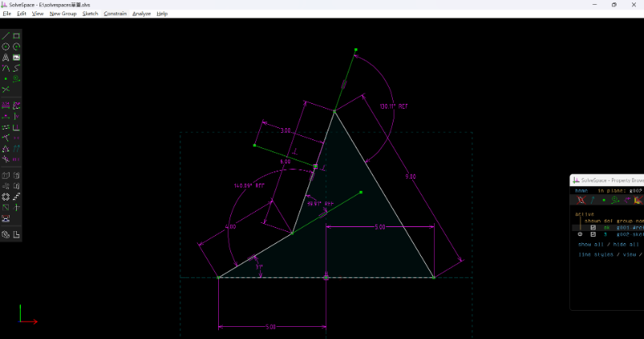

Exam <<
Previous Next >> Exam2
Exam1
Exam1 (10%): 建立 Webots 基本物件模擬場景
操作影片標題: 國立虎尾科技大學 - 機械設計工程系 - cd2025 Exam1 - 學員學號
檔案:/downloads/41223131-Quiz1.zip
1.參考圖如下(長度放大10倍，角度不變):

操作方法如下:
1.先建立一個Robot，在裡面新增:基座(base)，尺寸1m、solid
2.建立一個節點(joint1)，把節點尺寸設置在-0.5，建立一個endPoint裡面的solid取名link1
3.黑色與紅色角度我學號31度轉換勁度為-1.5163，X軸建立在-0.5
4.在children下建立一個紅色桿子 長度為:0.4m
5.新增節點(joint2)，Z軸往上1，點位在0.4m
6.建立solid，角度為39.91，轉換勁度是5.38971，在children下建立兩個pose 長0.6m、短的0.3m綠色的桿子
7.新增節點(joint3) z軸往下1，點位在0.6m
8.建立solid 角度為130.11 轉換勁度是1.6189，在children下建立pose，藍色長度0.9m
9.在建立節點4，z軸0.1，點位0.9m
10.記得作動的物理量需打開
11.導入程式如下，即可轉動
|
1
2
3
4
5
6
7
8
9
10
11
12
13
14
15
16
17
18
19
20
21
22
|
from controller import Robot
def run_robot():
# Create the Robot instance
robot = Robot()
# Get simulation time step
timestep = int(robot.getBasicTimeStep())
# Get motor device
motor = robot.getDevice('motor')
# Set motor for continuous rotation
motor.setPosition(float('inf'))
motor.setVelocity(1.0)
# Main control loop
while robot.step(timestep) != -1:
pass
if __name__ == "__main__":
run_robot()
|
完成影片檔案如下:
Exam <<
Previous Next >> Exam2